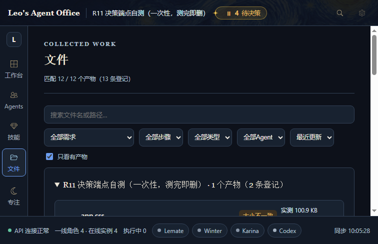
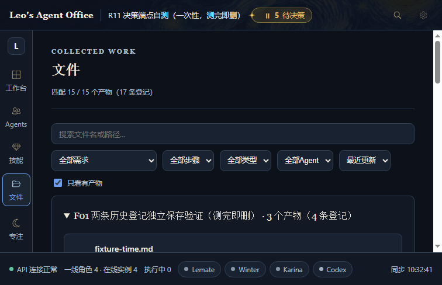
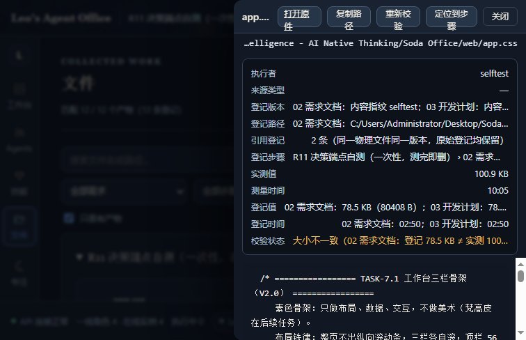

F01 第 9 轮 · 同一文件两条历史登记的独立校验
2026-11-16 10:00–10:30 · server.js 127.0.0.1:8090（build r11c）· Edge headless Edg/157.0.4341.60（CDP 9451）· 全部数值为 getComputedStyle / getBoundingClientRect / curl 实测
一、改了什么
- 分组键升级（app.js ~2815）：登记分组键从「字节数」升为「字节数 + 内容指纹」完整版本标识；汇总前提收紧为「版本标识完全一致」，title 明写指纹与核对口径。
- 抽屉逐条登记（app.js ~2187）：新增「登记版本」「登记路径」逐条列出；登记值/登记时间此前已逐条。
- app.css：行背景 #182230；行末追加
max-height:96px; overflow:hidden。
并行协作本轮期间其他 agent 在同区域持续落层（10:01 第10轮 · 10:12 第11轮 · 10:23 微调），沿用我的分组键并细化分行展示，均未回滚。验证针对组合后的最终代码（app.js 2a54fee2… / app.css 90ed1fb6…）。
二、验证了什么（真实数值）
V0 · 自然态：同版本 → 汇总
| 项 | 实测值 | 规格 |
|---|
| 组头 / 汇总行 | 1 个产物（2 条登记） · 登记 78.5 KB ×2 | 相同内容汇总 ✓ |
| 行高 | 84px（min 68 / max 96） | 68–96px ✓ |
| 背景 / 边框 / 圆角 | rgb(24,34,48) · 1px rgb(51,66,87) · 8px | #182230 · 1px #334257 · 8px ✓ |
| 元信息列 / 字号 / 行高 / 颜色 / 行距 | 190px · 12px · 18px · rgb(215,225,238) · 4px | 190px · 12px · 18px · #D7E1EE · 4px ✓ |
V1 · 数量不变 + 双侧独立读取
- 聚合前后：登记数 = 实体引用合计 13=13（后续快照 17=17；增量来自并行自测任务 TEST-F01R10，API 实证，本特性无重复计数）
- curl
/api/office/flow：TEST-R11 恒 2 条 app.css 登记 = 80408 B / selftest-placeholder ×2，与页面逐项一致
- 抽屉：登记版本/路径/值/时间/关联步骤全部逐条独立（TEST-R11›doc、TEST-R11›plan）
V2b · 大小不同 → 分行（bytes 80408→93000 原子变异，测后还原）
- 两行独立登记
02 90.8KB·selfte·02:50 ≠ / 03 78.5KB·selfte·02:50 ≠——无 ×N、无汇总数字
- 每行 title 四要素：登记ID / 原始字节数（93000 B、80408 B 各自）/ 版本标识 / 登记时间 + 逐条比对结论
- 分行态样式仍在规格内（96px / #182230 / 边框圆角 / 190px / 12px/18px/#D7E1EE）；元信息→操作区间隙 16px 无交叠；还原后回到 ×2 汇总
V2c · 同字节异指纹 → 版本身份分叉（sha256 原子变异，测后还原）
- 拆为 2 行实体：
data-vkey = sha:f01r9-fake-version-0001 与 sha:selftest-placeholder 各自独立；每行「实测 + 登记 78.5 KB + 身份行」，无 ×2 合并
- 组头
2 个产物（app.js:3017 设计：实际发生合并才标注「（N 条登记）」）；同快照 17=17；还原后回到 1 个产物（2 条登记）
V3 · 物理文件修改不覆盖历史登记
- 物理文件 103351→103469 B：页面与服务端历史登记仍 80408×2 / selftest-placeholder 不变
- sha256 字节级还原一致；还原后实测回 103351 B，登记仍 78.5 KB ×2
V4 / A11
- getBoundingClientRect 全程无交叠（最小间隙 16px）；页面 JS 异常 0 条



证据：f01r9-verify.json（首轮 33 过 / 8 项断言口径问题）· f01r9-verify2.json（14/14 全过）· 上述截图 · 备份 app.js.bak-f01r9 / app.css.bak-f01r9
三、还差什么 / 待决策
- app.js 验证完成后仍被并行编辑（10:01→10:12→10:23→2a54fee2）。终验锁定：停手后重跑
node --experimental-websocket f01r9-verify2.mjs（约 30 秒 / 14 项断言）。
- TEST-R11 自测任务（标注"测完即删"）仍保留——它是 F01 展示与复验的载体，删除属破坏性操作，待 Leo 拍板（并行 agent 的 TEST-F01R10 同理）。
- 第 10/11 轮层是并行 agent 产出，本报告只验证组合行为；技能页 r11 层不在任务范围、未验证。